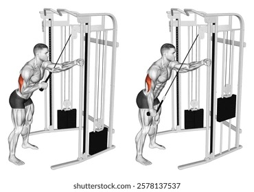
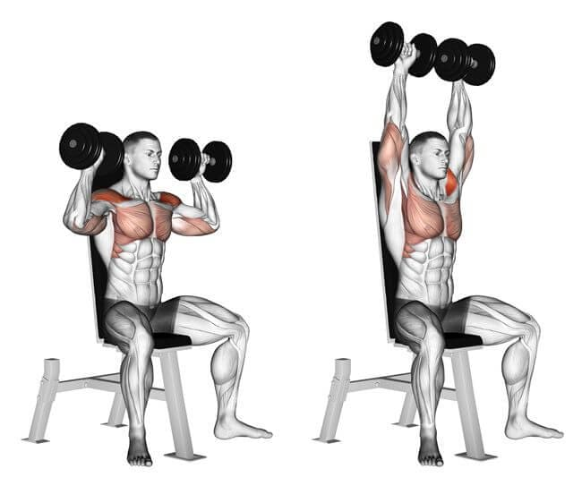

OEFENING 1
Incline Dumbbell Press
Bankdrukken op een schuine bank met dumbbells, gericht op de bovenste borstspier.
- Bank op een lichte hoek, 30 tot 45 graden
- Ellebogen niet volledig doorstrekken bovenaan
- Gecontroleerd naar beneden, geen stuiteren op de borst

OEFENING 2
Flat Press
Bankdrukken op een vlakke bank, de basisoefening voor de volledige borstspier.
- Schouderbladen samen en naar beneden
- Voeten stevig op de grond
- Stang of dumbbells zakken tot net boven de borst

OEFENING 3
Pec Fly
Isolatieoefening voor de borst, op de machine of met kabels.
- Lichte buiging in de ellebogen, gedurende de hele beweging
- Beweging komt uit de borst, niet uit de schouders
- Even knijpen in de eindpositie

OEFENING 4
Single Arm Tricep Pushdown
Tricepsoefening aan de kabel, één arm per keer.
- Elleboog blijft tegen het lichaam, beweegt niet mee
- Volledig doorstrekken onderaan
- Rustig terug laten komen, niet laten terugveren

OEFENING 5
V-Bar Pushdown
Tricepsoefening aan de kabel met de V-vormige grip, beide armen samen.
- Ellebogen dicht bij het lichaam
- Lichte voorover buiging vanuit de heup, rug recht
- Volledige strekking onderaan, kort vasthouden

OEFENING 6
Skull Crusher
Tricepsoefening liggend op de bank, met stang of dumbbells.
- Ellebogen wijzen naar het plafond en blijven stil
- Stang zakt richting voorhoofd, niet richting keel
- Gecontroleerde beweging, zowel op als neer

OEFENING 7
Shoulder Press
Drukoefening voor de schouders, zittend of staand, met stang of dumbbells.
- Core aangespannen, geen overdreven holle rug
- Stang of dumbbells recht boven de schouders drukken
- Niet volledig op slot drukken bovenaan

OEFENING 8
Rear Delt Fly
Isolatieoefening voor de achterste schouderspier, met dumbbells of op de machine.
- Lichte buiging in de ellebogen
- Beweging komt uit de achterste schouder, niet uit de rug
- Geen zwaai, rustig tempo

OEFENING 9
Cable Shoulder Side Raises
Zijwaartse schouderheffing aan de kabel, voor de zijdelingse schouderspier.
- Lichte buiging in de elleboog, tijdens de hele set
- Til tot ongeveer schouderhoogte, niet hoger
- Traag naar beneden, geen momentum gebruiken